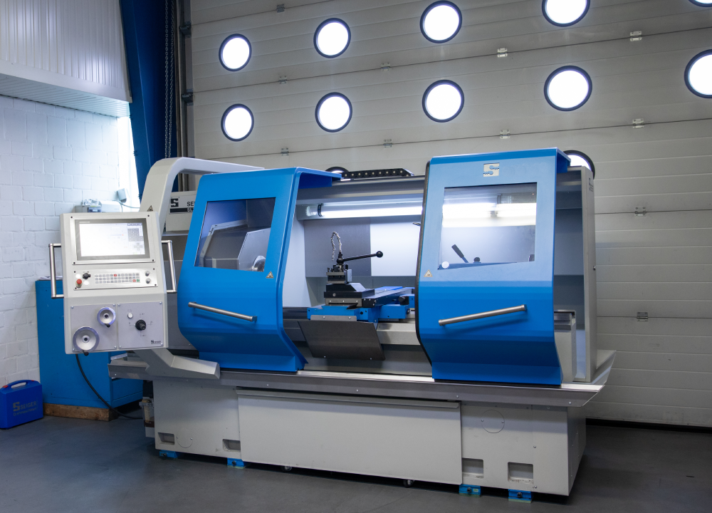
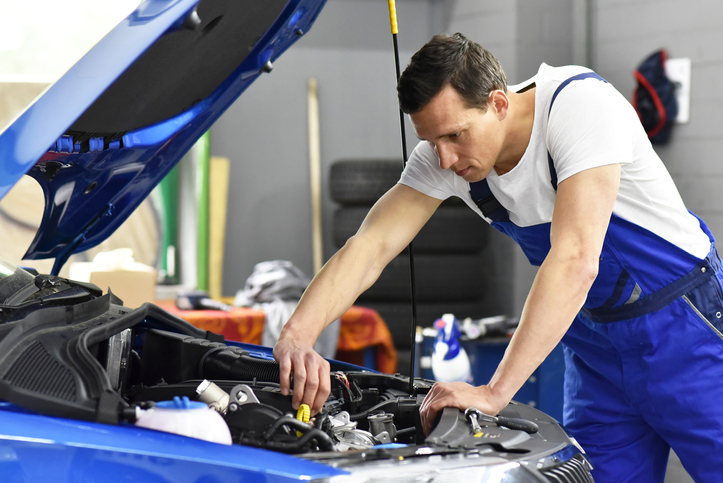

Neue Ausrüstung für die Mechaniker in der Berufsschule
Die Mechaniker der Berufsschule dürfen sich über eine spannende Neuerung freuen: Ab sofort steht eine moderne CNC-Maschine zur Verfügung, die den Unterricht bereichern und praxisnaher gestalten wird.

Die CNC-Maschine ermöglicht es den Schülern, präzise und komplexe Teile zu fertigen, was ihnen wertvolle praktische Erfahrungen für ihre zukünftige Karriere vermittelt.
>
Zusätzlich zur CNC-Maschine wurden auch neue Werkzeuge und Software eingeführt, um den Unterricht weiter zu verbessern und den Schülern die bestmögliche Ausbildung zu bieten.